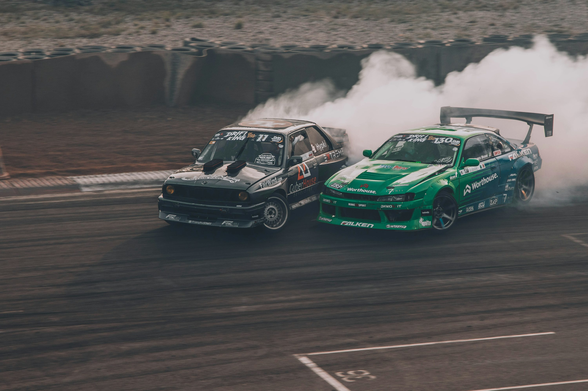
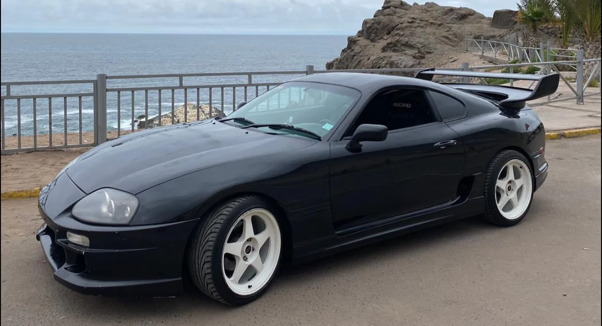

O que é Drift?
Drift é uma técnica de direção em que o motorista perde intencionalmente a tração traseira do veículo, controlando-o em curvas com derrapagens. Popularizado no Japão, o drift tornou-se um esporte de automobilismo com competições ao redor do mundo.
Carros Icônicos do Drift
Os carros mais utilizados no drift são aqueles com tração traseira e boa distribuição de peso. Modelos como Nissan Silvia, Toyota AE86, Mazda RX-7 e Nissan 350Z são famosos no esporte pela sua capacidade de derrapagem controlada.
